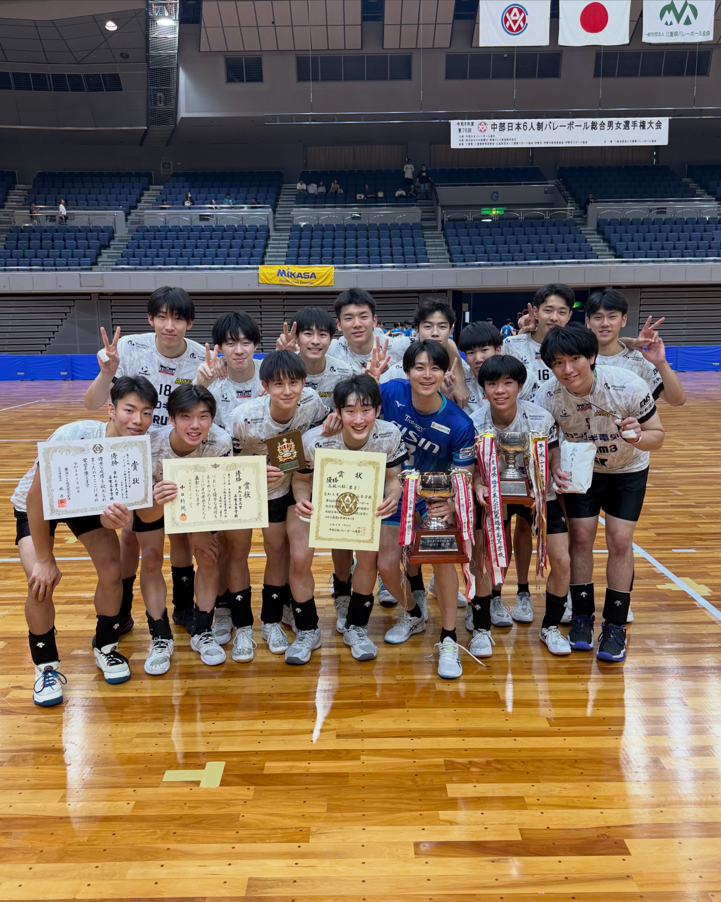
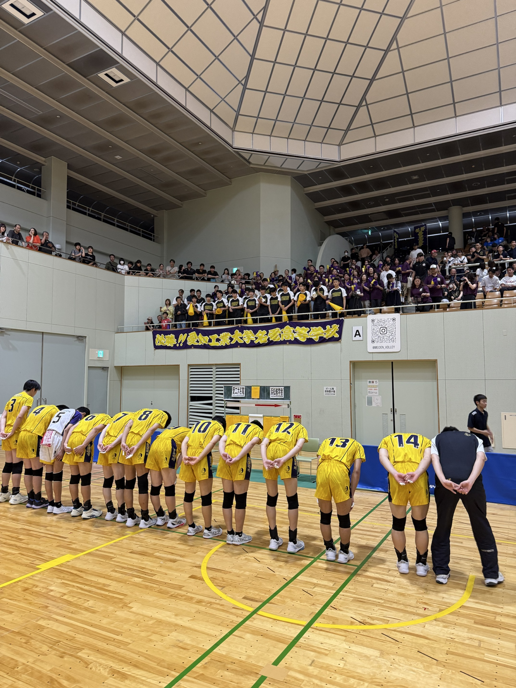
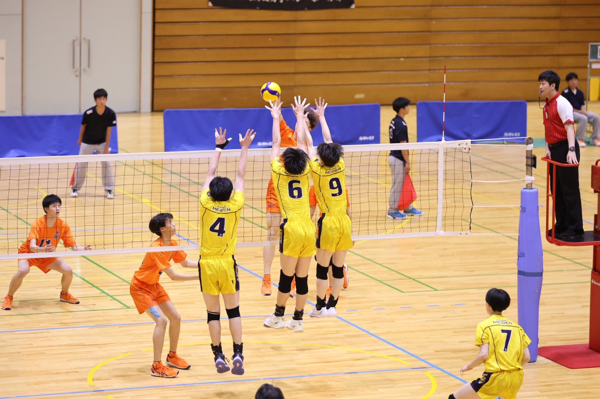

優勝大会初優勝
- 愛工大名電2-0海星（三重県）
- 愛工大名電2-0浜松修学舎（静岡県）
- 愛工大名電2-1聖隷クリストファー（静岡県）
Results
最新大会結果と過去成績を整理し、チームの現在地と挑戦を伝えます。
Latest Results
一戦ごとの結果に向き合い、次の成長へつなげます。


2回戦敗退

BUNBU RYODO RESULTS
競技力と学業の両立を目指す体制へ転換後、
愛工大名電男子バレーボール部は着実に成果を積み重ねています。